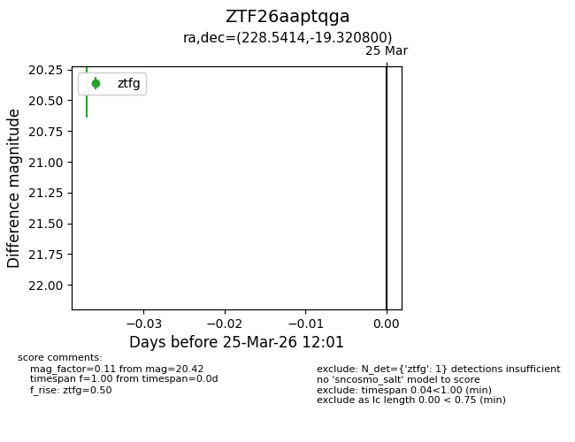
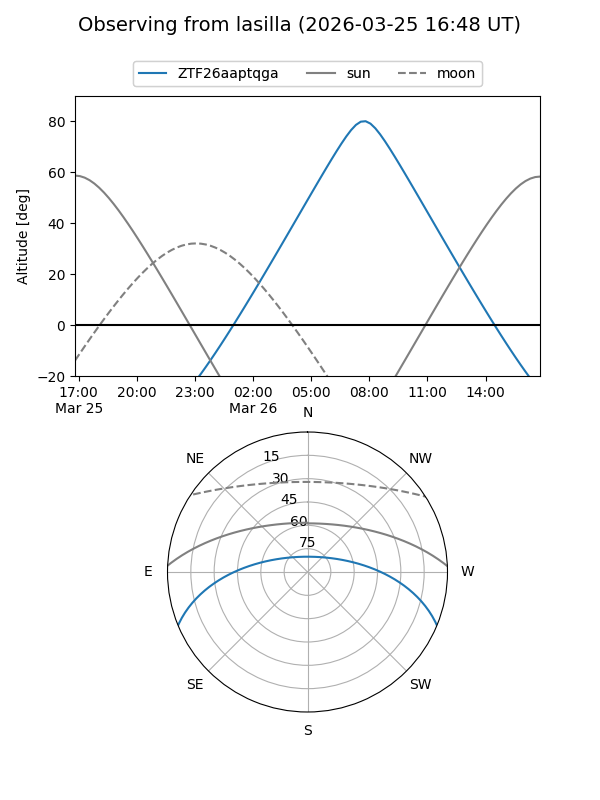
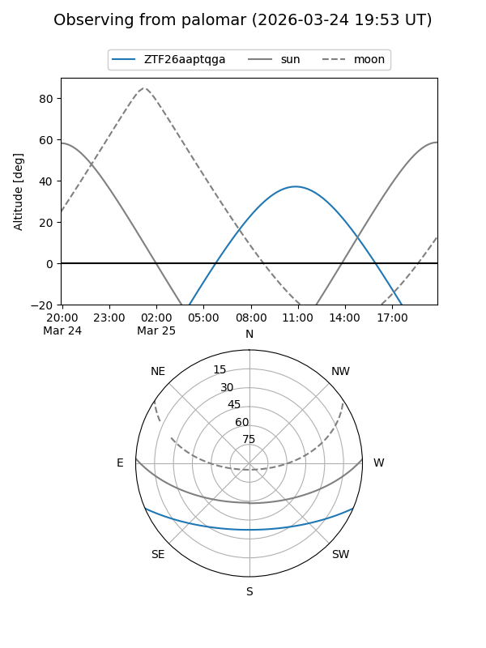

ZTF26aaptqga
Target ZTF26aaptqga at 2026-03-25 12:04
Aliases and brokers:
FINK: link
Lasair: link
ALeRCE: link
alt names
ZTF26aaptqga (ztf,fink_ztf)
Coordinates:
equatorial (ra, dec) = 228.5414,-19.32080
equatorial (HMS+DMS) = 15:14:09.94,-19:19:14.88
galactic (l, b) = (343.4538,+32.09531)
Flags:
Photometry:
last ztfg=20.42
1 ztfg detections
Lightcurve

Visibility


Additional plots